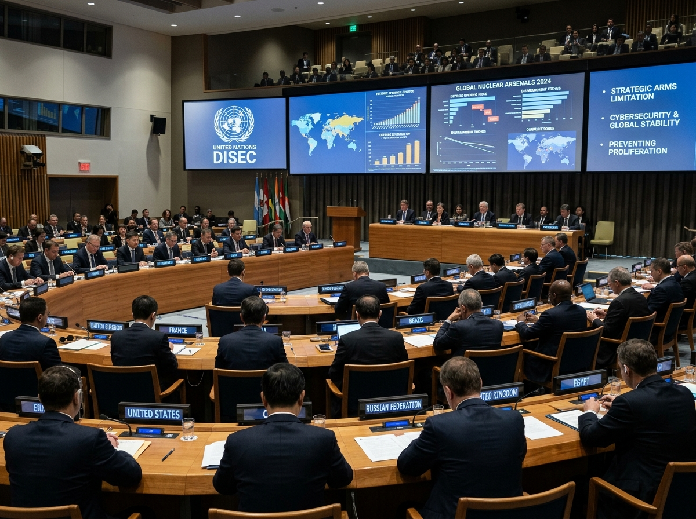

Hover / Tap for AgendaDisarmament & International Security (DISEC)
Mandated to safeguard global stability, DISEC delegates will negotiate multilateral treaties addressing autonomous weapon technologies, cyber-kinetic escalation, and non-proliferation protocols.
Official Agenda:
Register on MyMUN
Mitigating the Proliferation of Lethal Autonomous Weapon Systems (LAWS) and Regulating Artificial Intelligence in Modern Warfare.